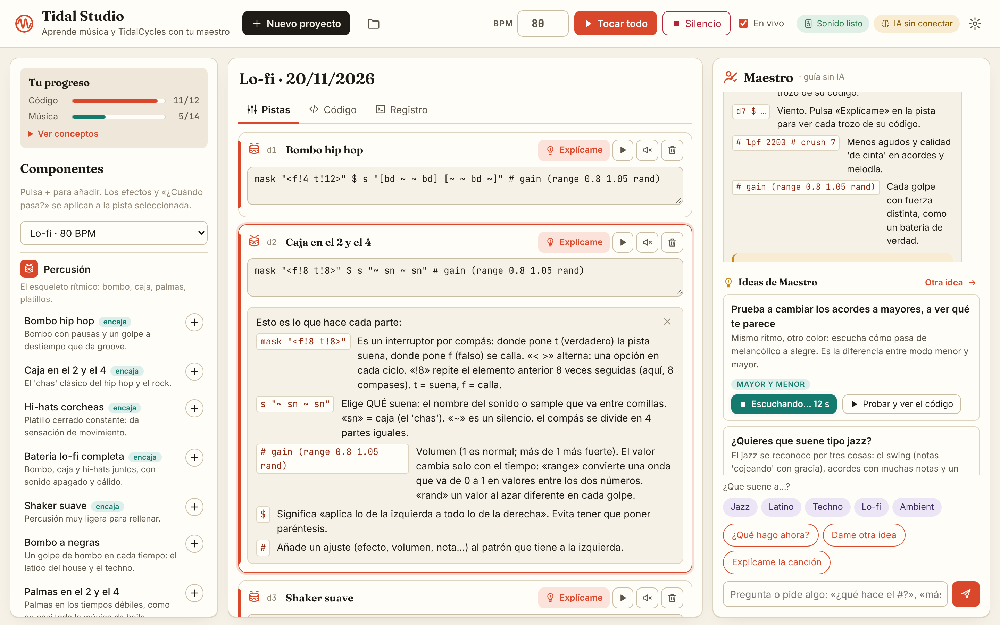

Tidal Studio es un estudio de música en vivo con un maestro que te acompaña en cada paso: te propone ideas como un productor, te explica cada línea de código y te enseña por qué suena bien.
macOS, Windows y Linux. Funciona con o sin IA.
Cada cambio en tu canción llega con su porqué. Así, poco a poco, pasas de pulsar botones a escribir tú el código.
Escucha tu canción y te propone ideas concretas, en primera persona.
«Yo quitaría el bombo 8 compases de cada 16. Cuando vuelve, pega el doble. Prueba a ver qué te parece.»
Pulsa «Explícame» en cualquier pista y te cuenta qué hace cada trozo.
«mask "<f!8 t!8>" es un interruptor por compás: 8 compases callado y 8 sonando.»
Cada idea enseña un concepto: pulso, backbeat, mayor y menor, contraste…
«Los acordes menores suenan melancólicos; los mayores, luminosos. Mismo ritmo, otro color.»
Estilo, tempo, ritmo, bajo, acordes, melodía y estructura, pulsando opciones. Lo oyes mientras eliges.
¿Qué quieres sentir? ¿Qué lugar imaginas? Con tus respuestas diseña contigo el plan de tu canción.
«Escuchar» toca cada idea unos compases y vuelve sola a tu versión. Decides con el oído.
Cada pista es código TidalCycles real que puedes editar. Nada de cajas negras.
Ve qué conceptos de código y de música ya has usado, y cuáles te quedan por descubrir.
Tus canciones se guardan solas. Empieza en blanco, con wizard o con una lluvia de ideas.

Pulsa un estilo y tu canción se transforma. Verás el antes y el después con lo nuevo resaltado, y una explicación de cada cambio para que mañana lo hagas tú.
s "bd*4 , ~ cp ~ cp"
n "<c'min7 f'min7>" # s "superpiano"swingBy (1/3) 4 $ s "bd ~ [~ bd] ~ , ~ cp ~ cp"
swingBy (1/3) 4 $ n "<c'min9 f'min9>" # s "superpiano"«swingBy (1/3) 4» retrasa un poco cada segunda nota: eso es el swing. Y los acordes ganan una nota más ('min9) para sonar más jazz.
No necesitas tener nada instalado. El instalador detecta tu sistema y prepara SuperCollider, SuperDirt y TidalCycles.
Una sola vez. Tarda un rato: descarga Haskell y los sonidos.
Se abre el navegador con el estudio. Pulsa «Nuevo proyecto» y deja que el maestro te guíe.